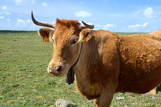

ALENTEJANA
Weight:
880 to 1320 pounds
Height :
47 inch
55 in.
Length:
67 inch
79 inch
Color:
solid coat color of fawn or light brown
Longevity:
10 – 15 years.
Alentejana personality
Alentejana cows are known for their docile and calm temperament. They are generally gentle animals, making them suitable for handling and management by farmers. Despite their calm demeanor, they also possess a certain degree of resilience and adaptability, which is valuable in the often challenging agricultural environments where they are raised, such as the hot and dry conditions typical of the Alentejo region in Portugal. These cows are often well-suited to extensive grazing systems, where they can thrive on pastureland with minimal human intervention. Their ability to efficiently convert forage into meat makes them valuable for meat production. Additionally, their calm nature can make them easier to handle during tasks such as milking or veterinary procedures
What to expect
1.Docility: Alentejana cows typically have a calm and gentle temperament, making them easier to handle and manage compared to more aggressive or high-strung breeds.
2.Adaptability: These cows are well-suited to various environmental conditions, particularly the hot and dry climate of the Alentejo region in Portugal. They can thrive on pastureland with minimal human intervention.
3.Efficiency in forage conversion: Alentejana cows are known for their ability to efficiently convert forage into meat, making them valuable for meat production in extensive grazing systems.
4.Resilience: They possess a certain level of resilience, enabling them to withstand challenging agricultural environments and indextain good health and productivity.
5.Moderate size: Alentejana cows are typically of moderate size, which can vary depending on factors such as age, sex, and nutrition. They are not overly large or heavy, which can make handling and management more manageable.
History of the Alentejana
n the 20th century, the Alentejana breed faced challenges due to changes in agricultural practices and the introduction of more specialized cattle breeds. However, efforts to preserve and promote indigenous Portuguese breeds, including the Alentejana, have led to renewed interest and recognition of their value. Today, the Alentejana cow is recognized as an important cultural and genetic resource in Portugal. Efforts to conserve and promote the breed continue through breeding programs, genetic conservation initiatives, and the promotion of traditional husbandry practices. The breed's adaptability, resilience, and genetic diversity make it an important asset for sustainable agriculture and biodiversity conservation in Portugal and beyond.